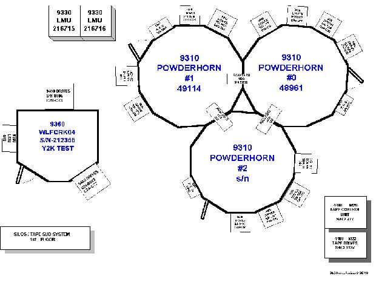

Introduction
The description is an inventory of everything within the facility as well as where each component is located. It
is important to identify the location of a component. The description includes the physical space, the
architectural systems, the fire protections systems, the mechanical systems, the electrical systems, the monitoring
systems and the physical security. The supporting text describes items such as the capacity of UPS,
generators, and servers.
Development Approach
To document the current facility:
-
Gather and review any client documentation that exists on the facility to determine the current facility’s
capabilities.
-
Perform a walkthrough of the facility to make sure that the documentation is accurate. Client documentation
is often out of date. Record each of the components in the facility and their exact location. The
location of each component is very important to understand when doing an assessment of the facility. Make sure that
you include all equipment, hardware, software, cabling, fire protection systems, mechanical systems, security
systems, etc.
-
Conduct interviews with facility personnel to discuss the current facility and its components.
-
Using AutoCad software, develop a diagram of the current facility. Use both .dwg and .dxf files. Make
sure that each component within the facility is included and labeled. If the client already has a softcopy of
the existing facility, use that as a starting point and make the necessary changes based on what was found during
the walkthrough.
-
Write any supporting text regarding the components, such as capacity, software, etc. using a word
processor.
-
Review the CAD drawings and the supporting text with the client to ensure that all of the information is correct.
Advice and Guidance
-
Always make a softcopy of the drawing. Marking up the client's existing hardcopy documentation or doing only
a hardcopy drawing makes it difficult to share this information. It cannot be easily sent to other team
members, architects, etc. that may need to look at it. Putting it in softcopy also gives you a start on
additional work you might do on the facility such as an assessment or future design.
-
Make sure that you do not accept any client documentation without performing a walkthrough yourself. Facility
components are often updated on a regular basis and client documentation can become quickly out-of-date. If
you do not do the verification yourself, you cannot guarantee that the client's documentation actually
represents what is in the facility.
-
Make sure that you document the exact location of each component. Placement is an important issue and it is
not sufficient to just understand what components are in the facility.
-
A person with an engineering background, or a strong facilities or IPR background, must write the major portions of
the description. Many of the sections relate to how the facility was originally built. As-built
drawings may have to be thoroughly reviewed in this effort. The final report should be thoroughly reviewed
with the client’s IT and facility staff. The recommendation is to perform this review in person. A
conference call is not as effective.
-
Actual time to perform the description and create the drawings is 40 - 160 hours, depending upon the physical size
of the facility and the documentation that is available. The description of a 20,000 square foot facility
with some existing documentation can be done in 40 hours.
Example

|